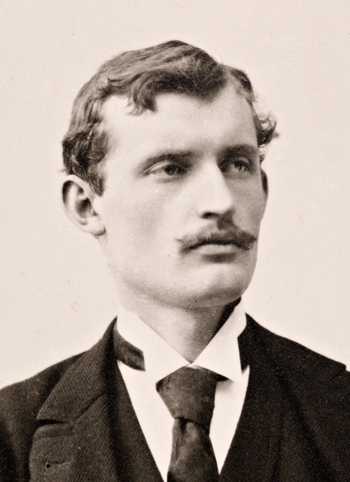
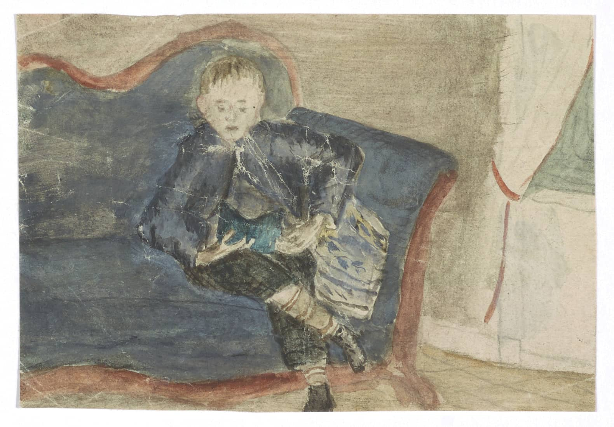
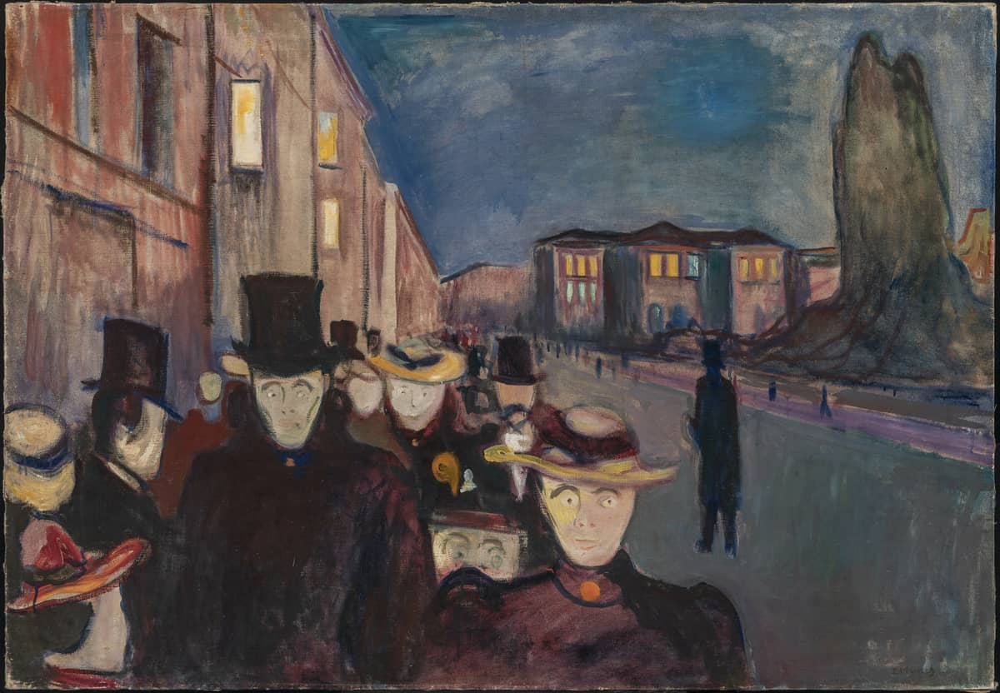

Edvard Munch:
Edvard Munch er Norges mest kjente billedkunstner. Han var maler og grafiker, og kunsten hans regnes som Norges viktigste bidrag til verdenskunsten.
Munch debuterte i 1883 og produserte store mengder hele livet, rundt 28 000 arbeider finnes etter Munch, og han er med det trolig en av verdens mest produktive bildekunstnerne. Han testamenterte rundt 20 000 arbeider til Oslo kommune. Munchmuseet på Tøyen åpnet i 1963. Et nytt museum åpnet i Bjørvika i 2021.

Bilde av Munch
Før du trykker på bildet, vet du hva Munch sitt mest kjente maleri er?
Stemmer: Skrik av Edvard Munch (1893)

Skrik er Edvard Munchs mest kjente verk og et av verdens mest ikoniske malerier. Munch lagde fire versjoner av motivet mellom 1893 og 1910, inspirert av en intens opplevelse han hadde på en spasertur ved Ekeberg i Oslo da himmelen plutselig ble blodrød. Motivet uttrykker sterk angst og uro, og i dag kan du se originalversjoner av verket på både Nasjonalmuseet og Munchmuseet i Oslo.
Utforsk Edvard Munch:
Klikk på menyen over eller boksene under for å lese mer om livet, kunsten og innflytelsen hans.
Historie
Hans historie og oppvekst før han ble en kjent maler.

Kunstverk
Munchs mest kjente verk og hva de skal vise.

Stil
Bruk av stilen i hans malerier og hvordan han viser fram og representerer noe.
Innflytelse
Hvor han fikk sin inspirasjon og hvordan han påvirket andre kunstnere.

Museet
Informasjon om Munchmuseet og hvor du kan se verkene hans i dag.